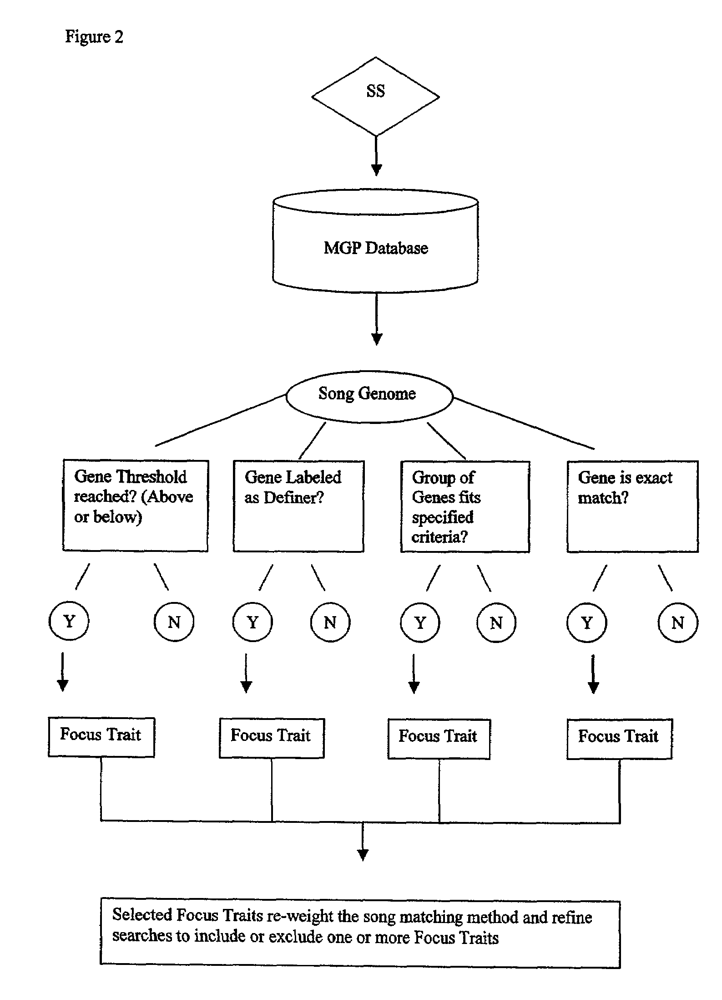
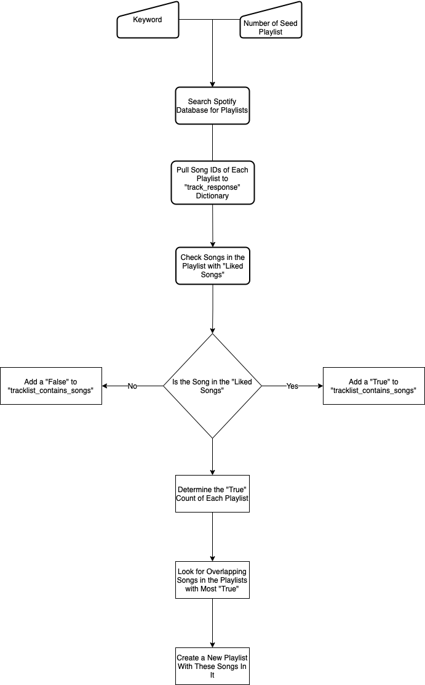
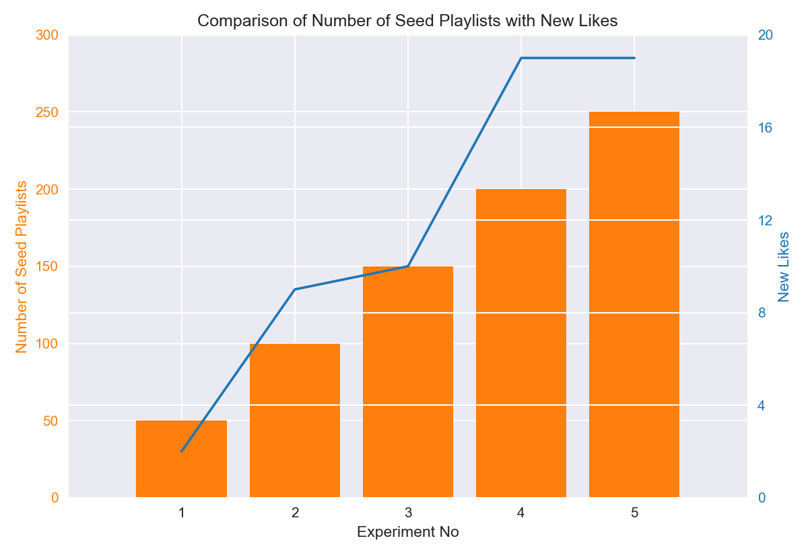
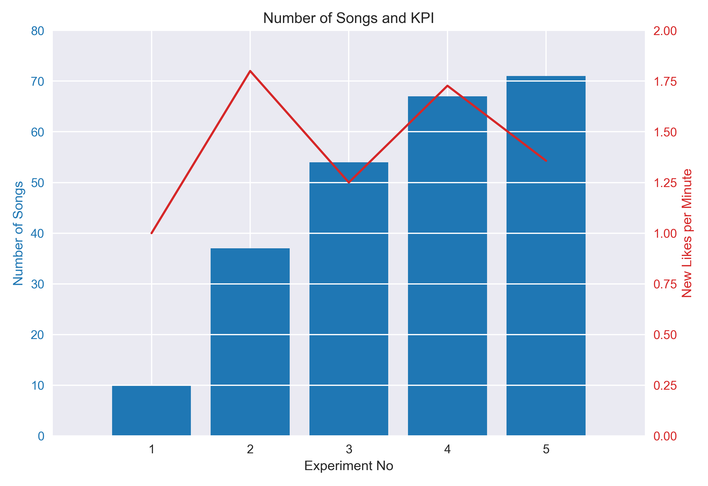

Time to read: 10 minutes
Introduction
Listening to music is, like most of the people, one of my favourite things to do. It makes one to experience all kinds of emotions and commuting in Istanbul a much less dreadful journey. But another aspect of the music which I equally love is discovering it and today I will talk about my Python script that help me achieve this.
The way I will discover new music is through playlists. Using Spotify API, the script will search playlists with given keyword and sort them by the most song overlaps with songs that I have already liked. Even though it does not feature any advanced algorithms; it is simple, does not require any personal data of others and the results were effective for me.
Background
A recommender system, or a recommendation system (sometimes replacing ‘system’ with a synonym such as platform or engine), is a subclass of information filtering system that provide suggestions for items that are most pertinent to a particular user. Typically, the suggestions refer to various decision-making processes, such as what product to purchase, what music to listen to, or what online news to read. Recommender systems are particularly useful when an individual needs to choose an item from a potentially overwhelming number of items that a service may offer. 1
So basically, a recommender system uses past behaviour or tastes of people (collaborative filtering) or inherent features of things (content-based) to recommend new items for users. To give content-based recommendations, firstly, items in which we are interested recommending should have preselected and/or user generated properties. Secondly, users must rate enough of these items so that we can try to understand what properties each user favors. Music Genome Project of Pandora2 can be given as an example for this method. Content-based approaches has the advantage of relevancy. Provided the classification of items is done properly, content-based recommendations will almost always be relevant. However, the recommendations are also likely to be “too similar” to what the user has already liked; in other words less serendipitous and they omit the context3. Let’s say there are two books about the same subject and while one of them is supportive of the topic, other one is against it. Content-based recommendation has no method to differentiate this aspect of items.

Recommendations using collaborative filtering mostly overcomes these drawbacks. Users that have similar tastes can recommend each other the items that neither could find another way. Also it is more probably that similar users like an item in the same context. There are two ways of collaborative filtering: item-based and user-based. Item-based collaborative filtering is closer content-based methods in theory because they both use item similarity to recommend an item. However, whereas content-based recommendation uses their content to measure similarity, item-based collaborative filtering utilizes the taste of users to determine similarity. If several users rate such items in a similar fashion, they are likely to be similar too. User-based collaborative filtering, in some cases named as neighborhood-based collaborative filtering, purely based on the proximity of user tastes. Algorithms such as k-Nearest-Neighbors, finds the shortest distance between users by their ratings of same items. Once the closest neighbors are found, their highly rated but unseen to other neighbor items are recommended.
Methodology
In this part I will show and explain my method of recommendation with snippets from my Python script. All of the code will be available at my GitHub page. The basic algorithm is shown in the Figure 2.

Because I will use Spotify Web API, to access endpoints faster and respect the rate limits, it is better to use a Python wrapper. So my communication with API will be handled by Spotipy. Let’s start with importing the required modules.
import spotipy
from spotipy.oauth2 import SpotifyOAuth #Spotipy Authentication Module
import time #To track time
import os #We need os to get environment variablesFirst, we need to set a Spotipy client with credentials and scope.
scope = ["user-library-read",
"user-read-playback-state",
"user-modify-playback-state",
"playlist-modify-public"]
auth_manager = SpotifyOAuth(scope=scope,
redirect_uri="http://localhost:8080",
show_dialog=True)
sp = spotipy.Spotify(auth_manager=auth_manager)SpotifyOAuth here is expecting two variables namely SPOTIPY_CLIENT_ID and SPOTIPY_CLIENT_SECRET to authenticate our client. I have added them as environment variables.
The spotipy client is set and ready to access Spotify API. The script asks for an input as a query for searching playlists. I have used genres as query, since they are most likely to have relevant songs in them. The aim is to find playlists with the most overlap with my “Liked Songs”, with minimal search.
query = input("Search for playlists: ")
start_time = time.time()
playlists = list()
offset = 0
end_offset = 150
for offset in range(0, (end_offset + 1), 50):
playlists.append(sp.search(query, 50, type="playlist", offset=offset))
print((offset + 50), "playlists added.\n")The reason for the increment of 50 is due to Spotify API’s restriction of the number of items that can be searched in one go to 50. Now we have playlists object as JSON response from the API.
Next, I will create a tracks_response variable that will contain all songs IDs of the playlists.
tracks_response = list()
print("Creating tracks_response.\n")
for page in range(len(playlists)):
for p in range(len(playlists[page]["playlists"]["items"])):
placeholder_tracks_response = list()
current_playlist_track_count = sp.playlist_tracks(playlists[page]["playlists"]["items"][p]["id"])["total"]
if current_playlist_track_count < 100:
tracks_response.append(sp.playlist_items(playlists[page]["playlists"]["items"][p]["id"],
fields="items(track(id))"))
else:
offset = 0
for i in range(0, current_playlist_track_count, 100):
placeholder_tracks_response.append(sp.playlist_items(playlists[page]["playlists"]["items"][p]["id"],
fields="items(track(id))", offset=offset))
offset += 100
all_placeholders_together = list()
for k in range(len(placeholder_tracks_response)):
all_placeholders_together.append(placeholder_tracks_response[k]["items"])
all_placeholders_together = dict(items = all_placeholders_together)
tracks_response.append(all_placeholders_together)This part of the script basically goes through the playlists item by item and adds the song IDs to tracks_response. Since the API can reach only 100 items at once, the script checks for the number of songs. If it is greater than 100, script adds the IDs by parts of 100 items.
Now we have a list object that has all of the songs IDs of each playlist. It is time to compare the tracks of these playlists with my ‘Liked Songs’. We will create a results list and add a True for each match; otherwise a False.
results = list()
for i in range(len(singleLayerTracksResponse)):
tracklist_contains_songs = list()
if None in singleLayerTracksResponse[i]:
while (None in singleLayerTracksResponse[i]) is True:
singleLayerTracksResponse[i][singleLayerTracksResponse[i].index(None)] = "4cOdK2wGLETKBW3PvgPWqT"
if len(singleLayerTracksResponse[i]) <= 50:
tracklist_contains_songs.append(sp.current_user_saved_tracks_contains(singleLayerTracksResponse[i]))
else:
page, remainder = divmod(len(singleLayerTracksResponse[i]), 50)
offset = 0
if remainder == 0:
for j in range(page):
tracklist_contains_songs.append(sp.current_user_saved_tracks_contains(singleLayerTracksResponse[i][offset:(offset + 50)]))
offset += 50
else:
offset = 0
for j in range(page):
tracklist_contains_songs.append(sp.current_user_saved_tracks_contains(singleLayerTracksResponse[i][offset:(offset + 50)]))
offset += 50
tracklist_contains_songs.append(sp.current_user_saved_tracks_contains(singleLayerTracksResponse[i][offset:(offset + remainder)]))
results.append(tracklist_contains_songs)There are two important points in this part of the script. First of all, there could be local songs in these playlists and they don’t have a unique song ID. Therefore, the script adds a dummy song in place of NoneType object, which the API can’t handle. Second point, to reduce the load on the API and to reduce the chance of being rate limited, the script checks the track overlap with 50 item batches. When I first wrote the script, it didn’t utilize this and as a result, it was rate limited. This simple trick also reduced the total runtime by 65%.
Continuing, this part counts the number of Trues and stores them in songOverlaps
songOverlaps = list()
for plist in range(len(results)):
songCounter = 0
if len(results[plist]) == 1:
songCounter = results[plist].count(True)
else:
for p in range(len(results[plist])):
songCounter += results[plist][p].count(True)
songOverlaps.append(songCounter)After that comes the sorting of playlists from the most overlapping to least and storing their original indice in mostOverlapPlaylists_indices.
songOverlaps_original = songOverlaps.copy()
songOverlaps_sorted = songOverlaps.copy()
songOverlaps_sorted.sort(reverse=1)
mostOverlapsPlaylists_indices = list()
for x in range(0, 6):
mostOverlapsPlaylists_indices.append(songOverlaps.index(songOverlaps_sorted[x]))
songOverlaps[songOverlaps.index(songOverlaps_sorted[x])] = 0Collect all of the songs in the overlapping playlists and store them in overlapsTrackResponse.
overlapsTrackResponse = list()
for x in mostOverlapsPlaylists_indices:
for y in range(len(singleLayerTracksResponse[x])):
overlapsTrackResponse.append(singleLayerTracksResponse[x][y])Check for duplicates in overlapsTrackResponse and if it is in at least overlapThreshold number of playlists, add that song ID to mostOverlapsSongs. We first convert mostOverlapsSongs to a set to remove duplicates and to a list again for easier manipulation.
mostOverlapsSongs = list()
overlapThreshold = 3
for x in overlapsTrackResponse:
if overlapsTrackResponse.count(x) >= overlapThreshold:
mostOverlapsSongs.append(x)
mostOverlapsSongs = set(mostOverlapsSongs)
mostOverlapsSongs = list(mostOverlapsSongs)And lastly, the script will end the timer and store the elapsed time in minutes to runtimePerMin and create a playlist with song IDs in mostOverlapsSongs.
end_time = time.time()
runtimePerMin = int((end_time - start_time)/60)
sp.user_playlist_create(username, name="Overlapping Songs from Nearest {} Playlists for Query '{}'".format(len(mostOverlapsPlaylists_indices), query), description="Seed Playlists: {} - Run Time: {} Minutes - Overlap Threshold: {} - Liked Songs: ".format((end_offset + 50), runtimePerMin, overlapThreshold))
last_playlist = sp.user_playlists(username, 1, 0)
sp.playlist_add_items(last_playlist["items"][0]["id"], mostOverlapsSongs[0:100])Results
The script created a playlist with recommended songs from a given query; now what? We have to measure its performance. The performance of the model has to be obviously based on the number of liked new songs from the generated playlist. Therefore, higher the number of seed playlists higher the probability of catching a playlist with high overlap right? We set end_offset to 10000 and hit enter. However, this would be both time consuming (Runtime) and put a heavy load on the Spotify API; thus, runs the risk of being rate limited. I’ve imagined the scenario that if I were to use this algorithm in the production, what would be my KPI and have settled on Number of New Likes per Minute.

This graph shows New Likes and the Number of Seed Playlists in each experiment. All of the experiments used the same query for genre and I have listened to all of the songs in the playlists. While excluding the ones that are already in my library, I have counted the songs which I liked.

This figure, on the other hand, shows the Total Number of Songs in Each Playlist and our KPI or Number of New Likes per Minute which is calculated by dividing new likes by runtime.
From both of the graphs, we can see that after 200 seed playlists, there are diminishing returns. New likes stays constant of and consequently, KPI decreases. One could argue that Experiment No. 2 has the highest KPI and therefore, it should be selected for the model. However, it generates low count of songs. I think a playlist with song count between 70 and 100 is better. Also greater seed has increased probability of finding more similar playlists.
Discussion
I think this was great learning experience for me and turned out nicer that I at first expected. Even though it doesn’t use any sophisticated algorithms, recommendations were mostly satisfying. It has to be said that the performance of my model depends a couple of variable, some of which I cannot control. For example, how much a user is invested in a genre is very important. If I have only 5 songs in my library for a target genre, my expectations would have to be low.
There three main controlling variables that changes the outcome of playlists: number of seed playlists, how many of the most overlapping playlists we take into consideration, and overlap threshold. They control how many songs will be in the generated playlist and a high overlap threshold tends to favor more popular songs, obviously. I manually tinkered with them to make song count between 70 and 100 in my experiments but in the future maybe I can add an automation of this. For now thanks for reading and see you next time!
Footnotes
Pandora Media LLC, “Consumer item matching method and system”, U.S. Patent US7003515B1, May 16, 2002”↩︎
U. Shardanand, P. Maes, “Social Information Filtering: Algorithms for Automating”Word of Mouth”” in CHI ’95: Proceedings of the SIGCHI Conference on Human factors in Computing Systems (ACM Press/Addison-Wesley Publishing Co., New York, NY, 1995), pp. 210–217↩︎